콜라겐을 만드는 궁극의 안티에이징
콜라겐을 만드는 궁극의 안티에이징
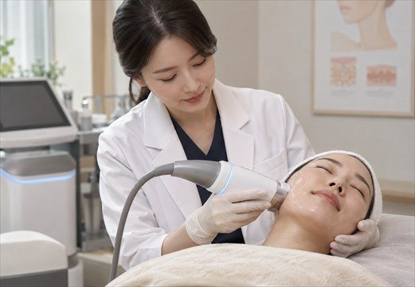
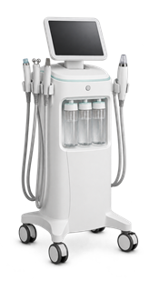
콜라겐 생성. 어쩌면 우리는 이 하나의 답을
완성하기 위해 싸워온 것인지도 모릅니다.
노화된 피부가 처지는 가장 큰 이유는
콜라겐 감소입니다.
콜라겐(Collagen)은 우리의 뼈,
피부, 인대를 구성하는 단백질로
피부 조직을
결합하고 탄탄하게 지탱해주는 역할을 합니다.
그런데 매년 콜라겐이 줄어들면서
전체적인 피부 구조가 무너지게 되는 것이죠.
피부 탄력을 높이는 일은
진피층에 있는 콜라겐을
얼마나 많이 생성하느냐의 문제입니다.
그래서 효과적인 피부 재생술은
진피층 복원을 목표로 합니다.
그 중심에는 오랜 명성의 고주파 레이저
단극성 고주파 리프팅가 있고,
그 장비로 명작을 만드는
온연피부과의원 주치의가 있습니다.
point 01
정밀 단극성 고주파 리프팅의 원리는 같습니다.
강력한 고주파(RF) 에너지를 진피층에 전달해서 조직을 수축시키는 것.
핵심은 누가, 어느 부위에, 얼마큼 콜라겐 재생력을 높이느냐입니다.
맞춤 시술은 단지 샷수를 정하는 문제가 아닙니다.
사람마다, 얼굴 부위별로 탄력과 꺼짐, 지방양과 대칭의 정도가 다릅니다.
동일한 600샷을 어떻게 배분하고, 에너지 강도를 조절하느냐에 따라 결과가 달라집니다.
임상경험이 풍부한 20년 베테랑 의사에게 시술 받는다면
빠르면 3주 뒤부터 다음과 같은 피부 변화를 체감할 수 있도록 돕습니다.
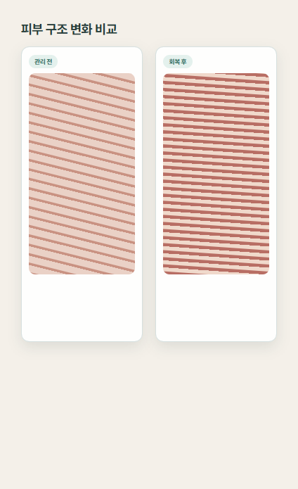
point 01
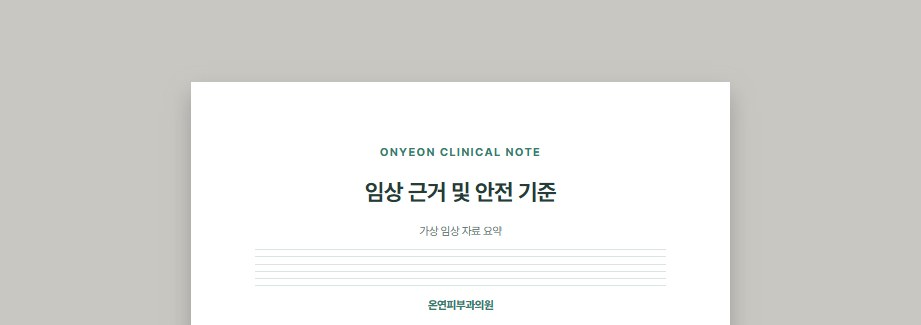
유두 진피층 콜라겐 재생으로
피부 수축 및 탄력 증가
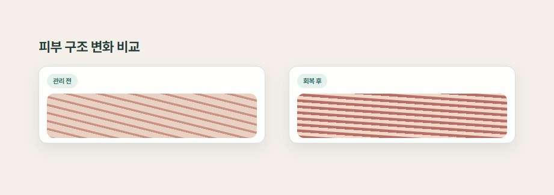
콜라겐 재생으로
진피층 밀도 및 피부 두께 증가
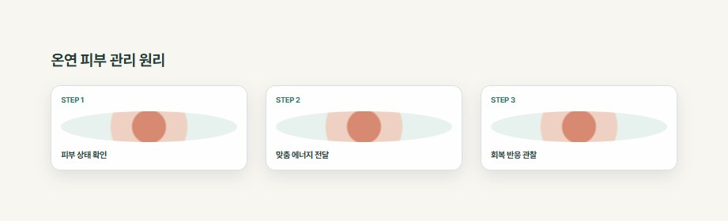
고주파 열에 의해 늘어진 콜라겐이 변성되어
헐거웠던 진피층 내 탄력섬유의 결합력이 높아집니다.
정밀 단극성 고주파 리프팅의 원리는 같습니다.
강력한 고주파(RF) 에너지를
진피층에 전달해서 조직을 수축시키는 것.
핵심은 누가, 어느 부위에,
얼마큼 콜라겐 재생력을 높이느냐입니다.
맞춤 시술은 단지 샷수를 정하는 문제가 아닙니다.
사람마다, 얼굴 부위별로 탄력과 꺼짐, 지방양과
대칭의 정도가 다릅니다.
동일한 600샷을 어떻게 배분하고,
에너지 강도를 조절하느냐에 따라 결과가 달라집니다.
임상경험이 풍부한 20년 베테랑 의사에게
시술 받는다면 빠르면 3주 뒤부터 다음과 같은
피부 변화를 체감할 수 있도록 돕습니다.
처진 피부 탄력이 개선됐다.
꺼진 부위 볼륨이 완화됐다.
피부가 쫀쫀하고 탄탄해졌다.
피부결이 좋아졌다.
잔주름이 개선됐다.
피부톤이 환해졌다.
*마스터 정밀 단극성 고주파 리프팅 시술 내원하신 분 만 명 대상
point 02
가능한 불편감을 줄여서 안전하고 편안하게 시술 받는 것.
우리의 또다른 목표입니다.
정밀 단극성 고주파 리프팅 장비 자체의 불편감을 줄이는 기술도 우수하지만
당신에게 최적의 에너지를 찾는 건 의사가 할 일입니다.
시술 중 저마다 다르게 느끼는 열감과 불편감을
내원하신 분와 실시간으로 소통하며 에너지를 조절합니다.
피부에 무리 가지 않는 적절한 에너지를 조사하여 화상을 방지합니다.
이것이 안전하게 피부 재생력을 최대로 끌어올리는 우리의 방법입니다.
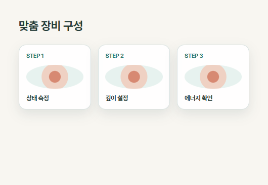
point 02
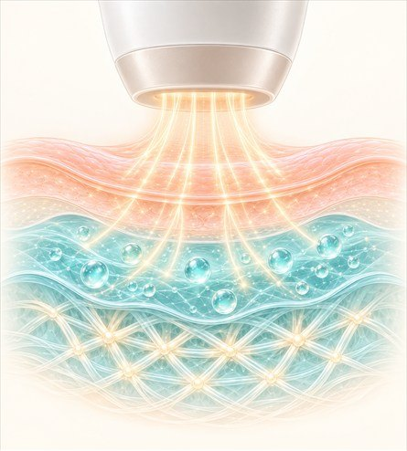
피부 표면 쿨링 시스템
표피 냉각으로 화상을 방지하고
진피층에만 열 전달
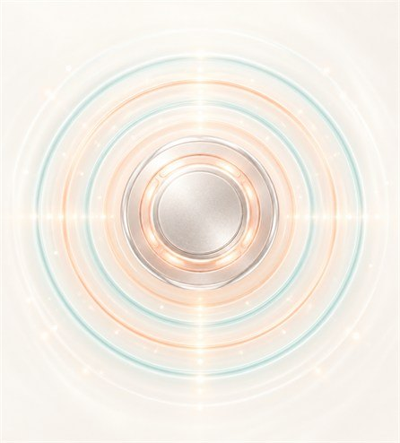
전방향 진동 기능
매샷마다 진동을 전달하여
불편감 체감을 감소
가능한 불편감을 줄여서 안전하고 편안하게 시술 받는 것.
우리의 또다른 목표입니다.
정밀 단극성 고주파 리프팅 장비 자체의 불편감을 줄이는
기술도 우수하지만 당신에게 최적의 에너지를 찾는 건
의사가 할 일입니다.
시술 중 저마다 다르게 느끼는 열감과 불편감을
내원하신 분와 실시간으로 소통하며 에너지를 조절합니다.
피부에 무리 가지 않는 적절한 에너지를 조사하여
화상을 방지합니다.
이것이 안전하게 피부 재생력을 최대로 끌어올리는
우리의 방법입니다.
명품 악기도 누가 연주하느냐에 따라 그 가치가 완전히 달라집니다.
정밀 단극성 고주파 리프팅는 단연 우수한 고주파(RF) 레이저 장비입니다.
다만, 그 변화는 전적으로 의사가 만들어냅니다.
6개월 후 타이트닝 충분히 높임
1년 이상 지속 효과
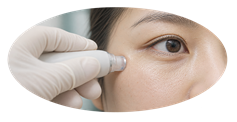
까다로운 맞춤 시술로 결과가 다릅니다.
시술 직후 즉각적인 피부 변화를 선사하고
6개월 후 타이트닝 변화를 충분히 높임하며
탄력 있는 젊은 피부를 1년 이상 유지합니다.
아이 단극성 고주파 리프팅
눈꺼풀 탄력 80% 개선
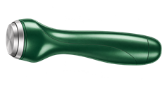
예민한 눈가에는 전용 아이팁을 사용하여
눈꺼풀 처짐, 탄력을 집중 완화를 돕습니다.
약 40분 시술
보다 빠르고 효율적인 진료
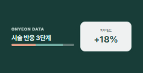
기존 보다 팁 크기가 33% 커져서
진료 시간을 25% 단축시켜
보다 편하게 시술 받을 수 있습니다.
해외 의료기기 기준과
한국 식약처 허가
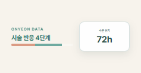
단극성 고주파 리프팅는 2002년, 고주파 전류를 이용하여
탄력을 개선한 최초의 고주파 레이저로
20년간 세계적으로 그 효과와 안전성을 입증 받았습니다.
정밀 단극성 고주파 리프팅 정품
너무나 당연한 원칙
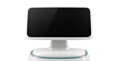
강조하지 않아도 모든 과정에서 신뢰를 전합니다.
4세대 정밀 단극성 고주파 리프팅 정품, 정품팁 사용.
온연는 의술의 기본과 원칙을 지킵니다.
명품 악기도 누가 연주하느냐에 따라
그 가치가 완전히 달라집니다.
정밀 단극성 고주파 리프팅는 단연 우수한 고주파(RF) 레이저 장비입니다.
다만, 그 변화는 전적으로 의사가 만들어냅니다.
진피층 재생과 더불어 보다 깊은 근막층(SMAS) 개선으로
속탄력을 끌어올립니다.
피부 유수분 밸런스와 보습력을 높여서
피부가 자연스럽게 빛납니다.
단극성 고주파 리프팅 + 다중 고주파
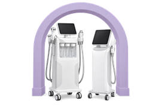
단극성 고주파 리프팅 + 물광주사
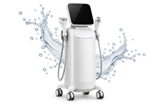
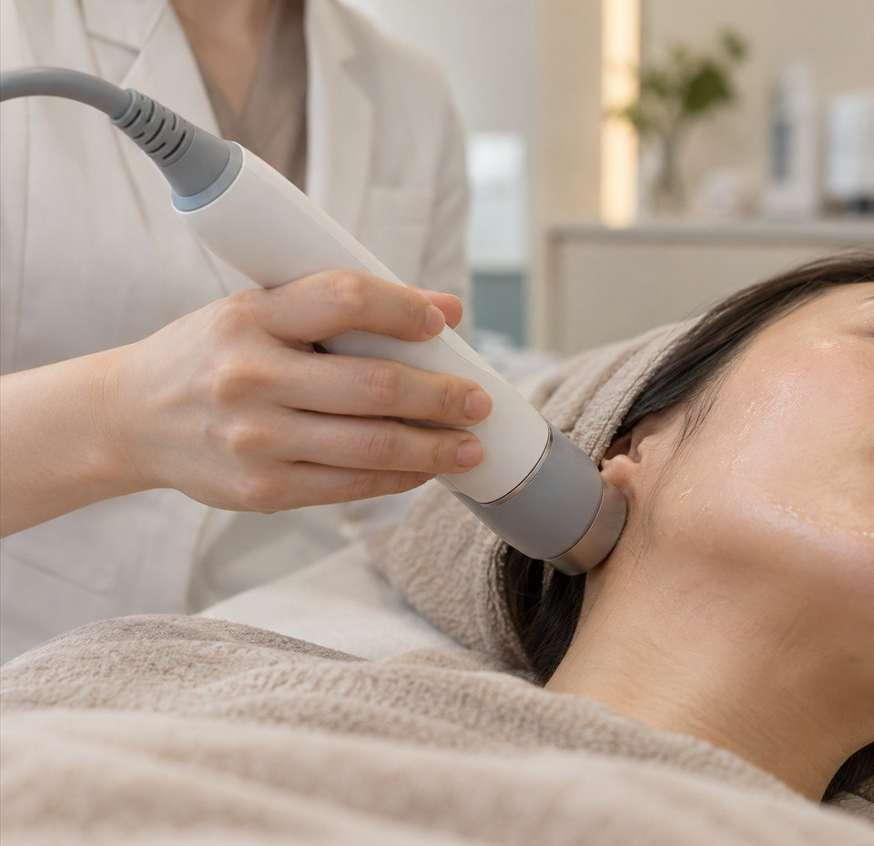
ONYEON SYSTEM
01
피부가 건강해지고
삶이 즐거워지는 변화
온연피부과의원는 피부를 넘어
당신의 삶을 바라봅니다.
편하게 고민을 나누고 제대로 관리 받고
피부가 좋아지는 모든 과정이 즐겁기를 바랍니다.
02
피부 전문 의료진의
기술과 끊임없는 연구
대한민국 2% 피부과 전문의로 구성된
온연피부과의원. 의료진 모두가 더 아름다운
피부를 위해 끊임없이 연구하고 노력합니다.
03
피부를 꿰뚫어 보는
과학적인 피부진단
보이는 증상뿐만 아니라 잠재된 질환,
시술 후의 변화까지 예측해 피부 속 문제를
정확하게 진단하고 진료합니다.
04
사람과 장비가 빚어낸
질 높은 의료서비스
숙련된 피부과 전문의와 십 수년 간
호흡을 맞추어 온 배테랑 의료진,
그리고 최첨단 안전장비 시스템.
온연피부과의원의 모든 것입니다.
ONYEON SYSTEM
01
피부가 건강해지고
삶이 즐거워지는 변화
온연피부과의원는 피부를 넘어
당신의 삶을 바라봅니다.
편하게 고민을 나누고 제대로 관리 받고
피부가 좋아지는 모든 과정이 즐겁기를
바랍니다.
02
피부 전문 의료진의
기술과 끊임없는 연구
대한민국 2% 피부과 전문의로 구성된
온연피부과의원. 의료진 모두가 더 아름다운
피부를 위해 끊임없이 연구하고 노력합니다.
03
피부를 꿰뚫어보는
과학적인 피부진단
보이는 증상뿐만 아니라 잠재된 질환,
시술 후의 변화까지 예측해 피부 속 문제를
정확하게 진단하고 진료합니다.
04
사람과 장비가 빚어낸
질 높은 의료서비스
숙련된 피부과 전문의와 십 수년 간
호흡을 맞추어 온 베테랑 의료진,
그리고 최첨단 안전장비 시스템.
온연피부과의원의 모든 것입니다.